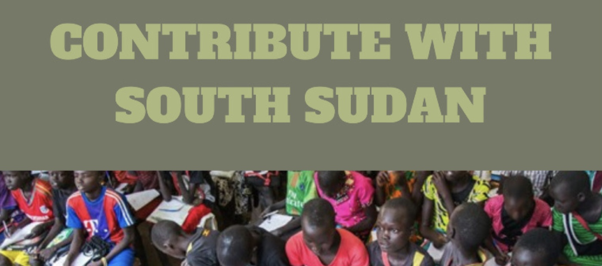

|  | |
ContextOnly 35% of South Sudanese above age 15 can read and write, ranking the country with the fourth-lowest literacy rate in the world. As of 2021, 2.8 million children were out of school, and girls face disproportionate hardships, such as child marriage, that force them to abandon education. |
|
What we doWe recieve funds from charities, organizations, and put in an investment towards the builiding of new schoolos for children in South Sudan. In addition, we organize trips with the aim to gain visibilty, and gather volunteers that are keen to help contributing with their services, such as teaching, labour, or materials for construction. |
27%of the population is literate |
A normal day in a school in South Sudan |
|
Return to the topLast updated by Catalina Leindekar |
|